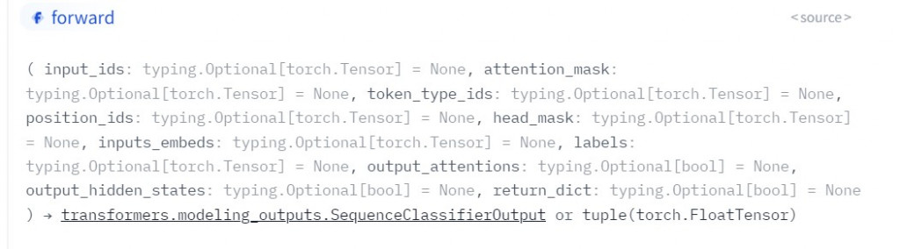
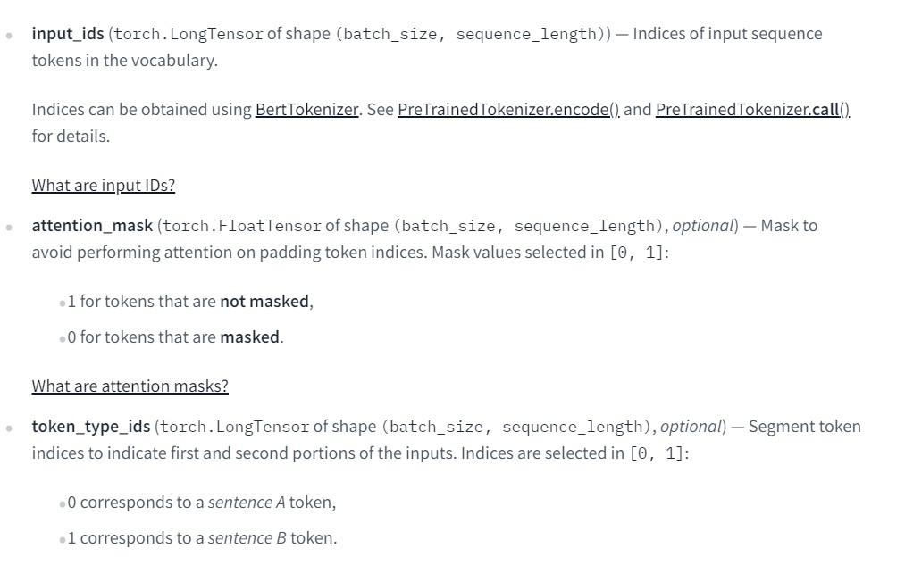

【day18】假消息辨識-BERT(Bidirectional Encoder Representations from Transformers)(下)
發布日期: 2022-09-22 16:58:44
原文連結: https://ithelp.ithome.com.tw/articles/10296141
該如何辨識假消息
首先我們要先知道假消息傳播的速度在網路中是相當快速的，所以我們只需要知道瀏覽器的一些演算法，就能透過快速的將自己想要的資訊傳播在網路上，所以我們要先聊聊這些演算法是如何運作的。
首先最直觀的想法就是越多人觀看，這篇文章的內容就會越有用，所以演算法應該要把觀看越多次數的文章推播到越上方，但這樣子只要有人特別去刷觀看次數，就算是廢文也能被他刷上到首頁，所以搜尋演算法並沒有這麼笨，演算法還會去考量網站裡實際的文字內容與不同網站之間轉跳的結果，來計算出最符合的答案。但有些人是直接使用相當有名的論壇，來大量傳播自己想要的資訊呢?這樣子就會有問題發生了，因為這些網站本來就是許多人會去點擊的，所以演算法很容易的就會將這些文章推送到搜尋第一頁，我們可能只創立了一些假帳號，或是買一些帳號來到處傳播這些消息，那麼，就會有許多人真的會相信這樣子的結果。
所以在這邊有幾種反制的方法，第一種就是找到一些專門製造假新聞的網站，通過AI分析這些URL的排序方式，來過濾掉這些網站或利用這些網站的內容，第二種方式就是找到散播假消息的ID，這些ID有可能只是用程式大量產生的假帳號，我們可以通過分析這些假ID的規律，來找到哪一些人可能是在發布假消息，並用AI來找到發布的內容之間的相似度，這樣子就可以順藤摸瓜找到一些被買來的帳號或惡意人士發布的訊息，甚至能夠找到消息的源頭。最後是關於通訊軟體的問題，我們可能常常會看到通訊軟體上有許多聳動標題的新聞或內容，這時就會點進去看看內容是什麼，這時候網站演算法就會發現，這個網站的客源來自於各大通訊軟體，這樣會使搜尋演算法認為文章的內容相當的重要，就會把這種造假的資訊放到搜尋第一頁當中，所以我們可以透過分析假消息的寫作風格，與真人的寫作風格來判別假消息。
說了這麼多我們先來看看BERT判別假消息的方式吧。
BERT假消息判別
我們昨天說到的BERT有許多的下游任務，這些下游任務所處理的功能都不相同，而我們為了要判別假消息，我們可以使用BertForSequenceClassification，來找到句子之間的關係，來訓練出一個能夠判別文章風格的假消息的AI模型。
今天的目錄如下:
- 1.導入BERT與函式庫
- 2.創建資料集
- 3.訓練模型
導入BERT與函式庫
首先我們在原始BERT的github上很難簡易的使用BERT model，所以有一個叫做hugging face的網站幫我們把一些非常複雜的pre-train model統整成了pytorch或是tensorflow的格式，並且將很多功能都直接包裝起來，不用一個一個自己寫，例如zero padding、text2num的方法，都能用一行程式執行完畢。
首先我們先來下載假新聞的資料集點我下載這一個資料集是國外新聞網被查證的假新聞與真實新聞資料集，我們今天要通過理解文意的方式來做一個分類器辨別出是真是假。
接下來導入今天用的函式庫，這邊的transformers是能夠幫助我們下載hugging face上所有的pre-train model的一個函式庫
from transformers import BertTokenizer, BertForSequenceClassification
from torch.utils.data import Dataset,DataLoader
from tqdm.auto import tqdm
import torch.utils.data as data
import pandas as pd
import torch
import transformers
之後我們只需要呼叫就能製作出一個tokenizer與model。
tokenizer = BertTokenizer.from_pretrained("ydshieh/bert-base-uncased-yelp-polarity")
model = BertForSequenceClassification.from_pretrained("textattack/bert-base-uncased-yelp-polarity")
創建資料集
首先我們一樣先從讀取csv檔開始
df_fake = pd.read_csv('Fake.csv')
df_real = pd.read_csv('True.csv')
因為我們的資料是直接分成兩個檔案，所以可以直接利用文本的資料大小創建一個新的label
inputs = df_fake['text'].tolist() + df_real['text'].tolist()
targets = len(df_fake['text'].tolist())*[0]+len(df_real['text'].tolist())*[1]
接下來要使用pytorch的方式創建dataset，相信到現在已經對這種方式不陌生了，但在使用hugging face網站的model時我們還有一個方式，就是利用字典將我們想要的把索引，當輸入名稱來當作訓練資料，但我們要做這件事前，要先知道我們到底要輸入哪一些資料，首先我們可以先到hugging face中BERT的頁面點我前往
我們可以看到今天要使用的分類器BertForSequenceClassification的參數有非常多種

但在這裡最重要的其實只有3個參數

在官方文件中寫了相當多的資訊，但其實概念很簡單，我們先看到以下表格
| 參數名稱 | 結果 |
|---|---|
| input_ids | 將文字轉換成數字 |
| token_type_ids | 判斷前後文的輸入 |
| attention_mask | zero padding的輸入 |
input_ids在理解上應該是沒有甚麼問題，就是我們之前所做的將文字轉換成數字，不過這個數字需要按照BERT當中的規則，token_type_ids這一個輸入就是segment embedding輸入的資料，在這個輸入當中只會有0與1的結果，attention_mask這個參數有一些人可能看完了BERT論文後把這一個mask當成了BERT在預訓練時的[mask]，這一個mask其實只是在對文字做zero padding時，所標註的位子而已，當我們對文字進行補0時這一個矩陣相對位子也會為0。你可能會在想不是有三層embedding嗎?怎麼只有2個輸入，因為在positon embedding層的輸入就是我們文字輸入的序列，只需要將資料丟入到model當中就會自動記錄到文字的位子訊息。
接下來只需要將剛剛的文字使用tokenizer的方式轉換，就能當作輸入了
tokenizer('I am a student')
-------------------顯示-------------------
{'input_ids': [101, 1045, 2572, 1037, 3076, 102], 'token_type_ids': [0, 0, 0, 0, 0, 0], 'attention_mask': [1, 1, 1, 1, 1, 1]}
不過在做假消息辨識時還需要加入label，因為我們做的事監督學習的方式，而不是非監督，所以要在原本產生的字典中加入labels的索引
t = tokenizer('I am a student')
t['labels'] = 1
-------------------顯示-------------------
{'input_ids': [101, 1045, 2572, 1037, 3076, 102], 'token_type_ids': [0, 0, 0, 0, 0, 0], 'attention_mask': [1, 1, 1, 1, 1, 1], 'lables':1}
知道了以上的作法後，我們就能使用pytorch來創建一個含有所有文本資料的字典了，我相信大家已經對創建資料集的方式很熟悉了，所以這邊就直接上程式碼。
class News(Dataset):
def __init__(self, inputs, targets, tokenizer, max_len=512):
t = tokenizer(inputs)
self.data = []
for ids,sep,mask,label in zip(t['input_ids'], t['token_type_ids'], t['attention_mask'], targets):
self.data.append({'input_ids':torch.tensor(ids[0:512])
,'token_type_ids':torch.tensor(sep[0:512])
,'attention_mask':torch.tensor(mask[0:512])
,'labels':torch.tensor(label)})
def __getitem__(self,index):
return self.data[index]
def __len__(self):
return len(self.data)
tokenizer = BertTokenizer.from_pretrained("ydshieh/bert-base-uncased-yelp-polarity")
model = BertForSequenceClassification.from_pretrained("textattack/bert-base-uncased-yelp-polarity")
df_fake = pd.read_csv('Fake.csv')
df_real = pd.read_csv('True.csv')
inputs = df_fake['text'].tolist() + df_real['text'].tolist()
targets = len(df_fake['text'].tolist())*[0]+len(df_real['text'].tolist())*[1]
dataset = News(inputs, targets, tokenizer)
train_set_size = int(len(dataset) * 0.8)
test_set_size = len(dataset) - train_set_size
train_set, test_set = data.random_split(dataset, [train_set_size, test_set_size])
訓練模型
隨然說是訓練模型，但在BERT中其實是在fine-tune模型，訓練分類器，在這訓練的過程中也沒有太多的差異，只是在取出資料時做法不相同而已，我們之前的loss值都是經過model與label經過loss function計算後的到的結果，所以我們必須定義一個loss function，但是在BERT中已經將loss function都整合好了，所以只需使用model(data)，就能計算出我們的loss值，而這一個輸出也與我們的輸入一樣，只需使用一行程式，就能將值取出。
我們先來看看輸出結果。
SequenceClassifierOutput(loss=tensor(0.4921, device='cuda:0', grad_fn=<NllLossBackward0>), logits=tensor([[-0.0726, -0.5257]], device='cuda:0', grad_fn=<AddmmBackward0>), hidden_states=None, attentions=None)
在這邊比較重要的就只有兩個數值，第一個就是loss，第二個則是logits，我們可以通過model.loss將loss取出，並且交給優化器來運算，而第二個數值所代表的意義就是我們的輸出結果，分數越高的結果就會是我們最後一個輸出的label，同樣的可以使用model.logits來取出數值。
了解到了這些之後我們將pytorch訓練方式與model組合在一起
model.cuda()
optimizer = torch.optim.AdamW(params = model.parameters(), lr = 1e-4)
for epoch in range(20):
model.train()
train = tqdm(train_loader)
for data in train:
for key in data.keys():
data[key] = data[key].cuda()
outputs = model(**data)
print(outputs)
loss = outputs.loss
train.set_description(f'Epoch {epoch}')
train.set_postfix({'Loss': loss.item()})
optimizer.zero_grad()
loss.backward()
optimizer.step()
model.eval()
test = tqdm(test_loader)
correct = 0
for data in test:
for key in data.keys():
data[key] = data[key].cuda()
outputs = model(**data)
_,predict_label = torch.max(outputs.logits,1)
correct += (predict_label==data['labels']).sum()
test.set_description(f'Epoch {epoch}')
test.set_postfix({'acc':'{:.4f}'.format(correct / len(test_set) * 100)})
model.save_pretrained('model_{}'.format(epoch))
最後來看看我們測試數據集的結果
Epoch 0: 100%
160/160 [00:20<00:00, 8.71it/s, Loss=0.00601]
Epoch 0: 100%
40/40 [00:00<00:00, 41.81it/s, acc=97.5152]
可以看到這結果比我們之前用到的NLP模型準確率還要高出許多，僅使用一個epoch就能訓練一個很好的結果，這也能體現出BERT為何能夠在2018年時成為了最佳的模型。
完整程式碼
from transformers import BertTokenizer, BertForSequenceClassification
from torch.utils.data import Dataset,DataLoader
from tqdm.auto import tqdm
import torch.utils.data as data
import pandas as pd
import torch
import transformers
class News(Dataset):
def __init__(self, inputs, targets, tokenizer, max_len=512):
t = tokenizer(inputs)
self.data = []
for ids,sep,mask,label in zip(t['input_ids'], t['token_type_ids'], t['attention_mask'], targets):
self.data.append({'input_ids':torch.tensor(ids[0:512])
,'token_type_ids':torch.tensor(sep[0:512])
,'attention_mask':torch.tensor(mask[0:512])
,'labels':torch.tensor(label)})
def __getitem__(self,index):
return self.data[index]
def __len__(self):
return len(self.data)
tokenizer = BertTokenizer.from_pretrained("ydshieh/bert-base-uncased-yelp-polarity")
model = BertForSequenceClassification.from_pretrained("textattack/bert-base-uncased-yelp-polarity")
df_fake = pd.read_csv('Fake.csv')[:100]
df_real = pd.read_csv('True.csv')[:100]
inputs = df_fake['text'].tolist() + df_real['text'].tolist()
targets = len(df_fake['text'].tolist())*[0]+len(df_real['text'].tolist())*[1]
dataset = News(inputs, targets, tokenizer)
train_set_size = int(len(dataset) * 0.8)
test_set_size = len(dataset) - train_set_size
train_set, test_set = data.random_split(dataset, [train_set_size, test_set_size])
train_loader = DataLoader(train_set,batch_size = 1,shuffle = True)
test_loader = DataLoader(test_set, batch_size = 1, shuffle = True)
model.cuda()
optimizer = torch.optim.AdamW(params = model.parameters(), lr = 1e-4)
for epoch in range(20):
model.train()
train = tqdm(train_loader)
for data in train:
for key in data.keys():
data[key] = data[key].cuda()
outputs = model(**data)
loss = outputs.loss
train.set_description(f'Epoch {epoch}')
train.set_postfix({'Loss': loss.item()})
optimizer.zero_grad()
loss.backward()
optimizer.step()
model.eval()
test = tqdm(test_loader)
correct = 0
for data in test:
for key in data.keys():
data[key] = data[key].cuda()
outputs = model(**data)
_,predict_label = torch.max(outputs.logits,1)
correct += (predict_label==data['labels']).sum()
test.set_description(f'Epoch {epoch}')
test.set_postfix({'acc':'{:.4f}'.format(correct / len(test_set) * 100)})
model.save_pretrained('model_{}'.format(epoch))
不過我們做了這麼多，真的能判別假消息嗎?我認為只能做到輔助的功能，我們頂多能運用AI幫助我們初步篩選，然後透過人為的方式調查並且處理，這樣子才能真正到了解假消息的源頭以及真偽。
課程中的程式碼都能從我的github專案中看到
https://github.com/AUSTIN2526/learn-AI-in-30-days